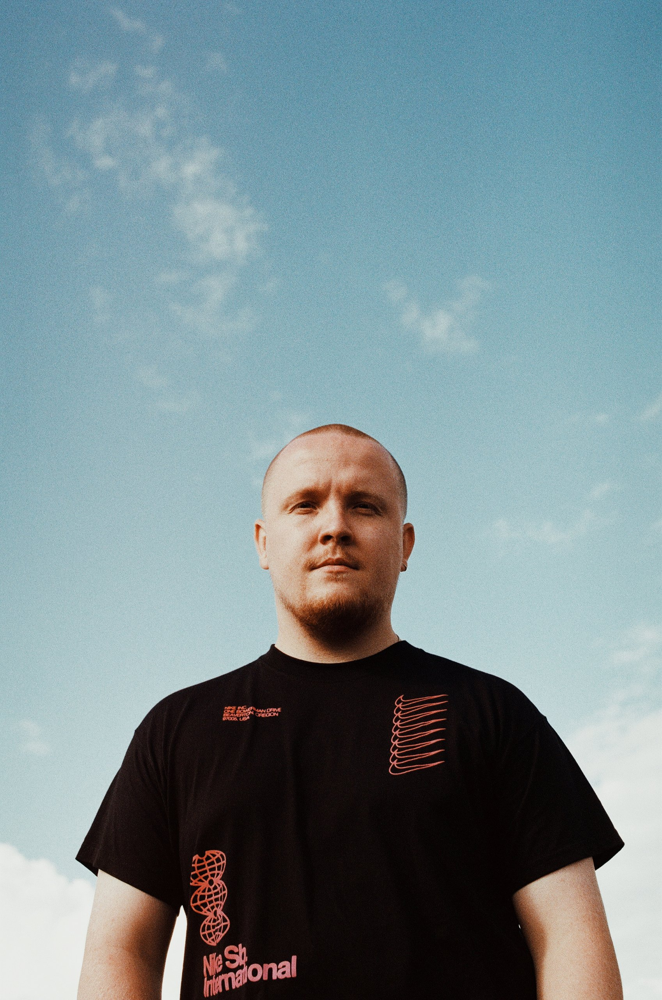

Producer and DJ
A few short years after breaking through, on the back of a series of huge house tracks, Dutchman Chris Stussy is now a growing part of the global underground scene.
A few short years after breaking through, on the back of a series of huge house tracks, Dutchman Chris Stussy is now a growing part of the global underground scene. Always leading the way and heading into new musical territory, he has built on early successes with a steady stream of essential new releases with each one bringing something fresh to the dance floor via influential labels like Djebali and Phil Weeks's Robsoul. Inspired by the likes of Kerri Chandler, raw Chicago grooves and well-schooled in the classics, Stussy uses this knowledge to head into the future and perfect his own take on the genre, while drawing on disco and the jazz of his youth to lend his music its extra special and standout sense of character.
All of this understanding also colours his work in the DJ booth of key clubs and festivals around the world. From Awakenings to the mainstage of Welcome to the Future, via Watergate in Berlin, Rex Club in Paris and Mysteryland with Carl Cox and Jamie Jones, plus various other gigs round the UK, Ibiza and Hungary. He can seamlessly switch up his sound to suit the moment and is as comfortable on the scene's huge mainstages as he is in intimate and personal clubs. As a remixer, Stussy has reworked the likes of Mark Farina and Michel De Hey, and after recent EPs like the 'Boogie Trippin EP' and 'Nightdriver EP' on Robsoul, and djebali Presents Chris Stussy, he is about to unleash a wealth of exciting new material. It includes a vinyl only EP on his regular home label PIV limited, as well as a new collaborative effort with the Djebali label boss and two new EPs for DJ Steaw's Rutilance Recordings and House Puff. As such, Stussy is continually finding fascinating new corners to explore within the House scene, and continues to showcase this in the studio as well as in the most important DJ booths around the world